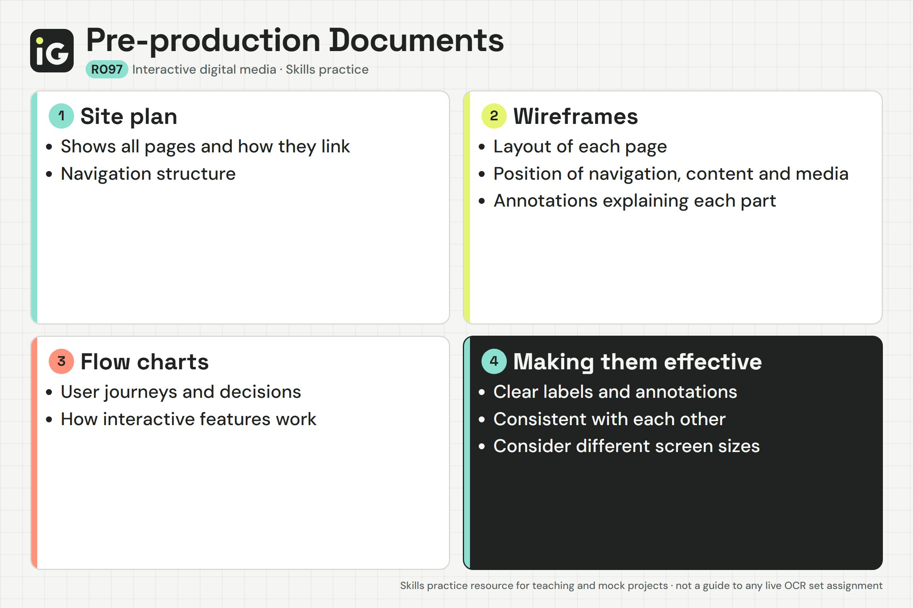
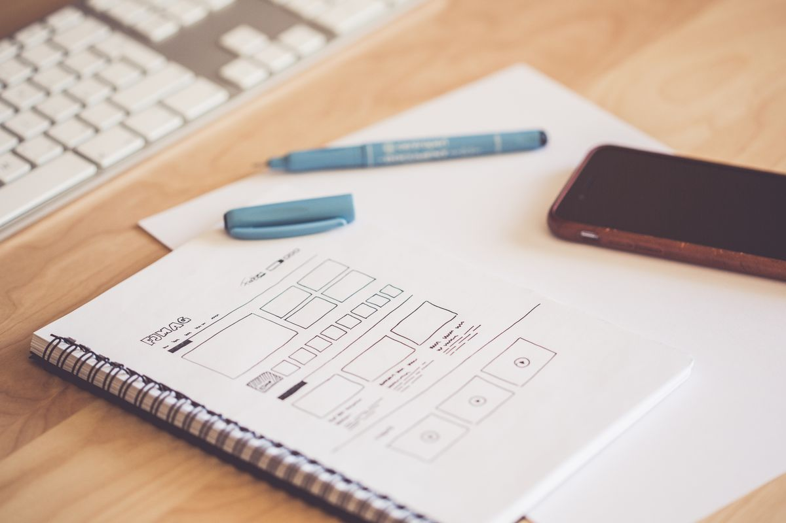

Wireframes & storyboards
- Layout, GUI, colour scheme, text

Create documents that show layout and content of your IDMP (website).
Use this checklist to make sure you can cover every part of this topic.

Wireframes and storyboards plan screen layouts; master page designs set the house style; navigation and hierarchy diagrams show how screens connect.